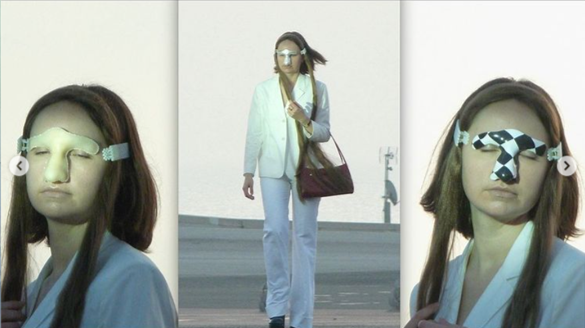

REFLECTIONS
AUDREY DESJARDINS: Autobiographical Design
°°DESIGNERS INFLUENCE IN DESIGN
I was surprised in a good way and loved the lecture; sometimes there are situations that we ignore but in reality, if we don't say them, they may not be. As it is the case that the designer influences the design and it is better to take into account their background, their beliefs, their subjectivities, emotions, among others. Instead of hiding them or not taking them into account. This in particular helps me as a designer because I feel that my influences, my origins and ways influence what I design all the time, however, I had not put it into perspective, I think that taking it into account helps me and could even improve my creative processes and that of others too.
Besides, I felt reflected in the mode of inquiry to articulate, propose alternative, provoke reflections, because that is my movement rightnow with every action I take because of my subjectivities and beliefs.
I think that to write this reflection today (march) has more sense to me than before, because of the context of the interventions, and many possibilities that might emerge for it, and in the same time, because we are not sure if an intervention is a real or validated intervention., and the ethnography and autobiographical design concepts make sense.
In addition, the types of documentation she uses to organize the data show us some features that we must have on mind to start the same process.
DOCUMENTATION EXAMPLES


LAURA FORLANO: Autoethnography
. . . . .. . .°°°°°:°:!:°:!:°:!°:!:!:!: https://lauraforlano.org/
SAUL DEZA: Radical Experimentation in Design Research
°°VISIT TO L´HOSPITALET
I loved the visit to the hospitalet, and I felt saul deza, our host, it was interesting because I shared with my peers from Latin America - South America, it seemed that what he liked was that he had "something" that for our perception was a similar to the informal, the cachinero, the clandestine, the recyclers , and underground , which characterizes many areas of Latin America.

I just love all the work and what goes around his vision of design and art. Now I feel a little more confused between What is art? and what is design?. In general, I loved how playful and subtly transgressive the proposals were, they all questioned you and that seemed to me the most interesting.
This wearable project made me think about the possibility of actually wearing it, and yes, probably I could. Because for fun, and it looks rare and cool, and because to avoid AI sistems as he said.
This Beauty Project DOES-SALON generates in me desires to play, create designs because we can and enjoy it, and see what´s happend, what´s next, or how people react to them, how I react to it. Now I´m confused if this is art or design?, or if the projects for fun that I have are design or art?.....

SERGIO UREÑA: Responsive Innovation
°°WHAT KIND OF FUTURES WE WANT?
Sergio made us question our point of view regarding our projects and if we were being inclusive, responsible, if we knew what our project could trigger if we executed it, and if we were reflecting enough (and if we knew what it meant).
at first it was something political and social, with ideals that I highlight as the mutually shaped and the co-produced, which was what you take interested me. And also the meaning of the object and how it is configured, seeing that it is beyond the object, I love when the readings become reflexive, because for me everything has an encrypted message that only some of us read, others feel and others only live.
And something that leaves me thinking, that I see my notes and I just did my reflection is "what is going to happen with our projects after the master finishes?, are we anticipating the future?

RON WAKKARY: Designing with
°°HUMANS AND NONHUMANS
In the lecture, Ron suggested that we think about who we are designing for and with whom we cohabit in the process, if we take them into account, and how this process becomes biographical by being part of our daily lives. He showed us an example of how the environment or actor in a project might encrease and it is fundamental to have them on mind, because they now are part of the process.
⊚ Thinking of your project as a biography what humans and nonhumans does it gather?
Intervention 1A: WASTE COLLECTOR::
+ Humans: 3 roommates, classmates, me.
+ NONhumans: waste, bacterias that appeared, some mosquitos.
Intervention 1B: HOLISTIC CONNECTION WITH FRUITS::
+ Humans: 9 holistic people, 2 classmates, me.
+ NONhumans: 10 specific types of fruits.
Intervention 2AB: LOOKING FOR SMELLS::
+ Humans: 9 holistic people, 2 classmates, me.
+ NONhumans: 10 specific types of fruits.
⊚ Of those that gather which ones joined later or were not planned to be part of the biography at first?
In the 1A, I was surpriced that classmates joined with their own movement with possibilities of mutate the project for better output.
In the 1B, I love that people I didn´t know appear to the ritual I prepare, and they get attached to it as same as me, So far I don't know what will happen to the project.
the interesting situation here is that nonhumans affect in humans and viceverse. In addition, the biography of all the humans effect between each others.
In the 2AB, because I´m tell my classmates about it they star to be part of it. More fruits appeared as well.
⊚ When your biography end and what will it leave behind?
It seems to me, that when the proyect became of everyone and not just me the responsability of been the speaking subject become flexible and reduce the leadership. But at the end, the project or the knowledge behind it ends up being part of you.
He expressed concepts like Constituency that is a radical expanded version of just design, that assembly humans and nonhumans to generate biographies.
⊚ What is constituency that your biography is part of?
I´m part of Latin American culture; South America politics and ways of living; peruvian rituals, behaviors and food (so on and so on...), with ancestral attachedments from family and culture, with holistic practices, with background in architecture, constructions, and art installations now living in Europe.
⊚ What does it include and what is your role as the speaking subject a part of the constituency?
It is difficult this question, because, the role I have is related to my path in this life and the relation I have with my environment, situations that are forming, rediscovering, appearing, transmutating, fitting them right now. But with the background that I explain in the question before.